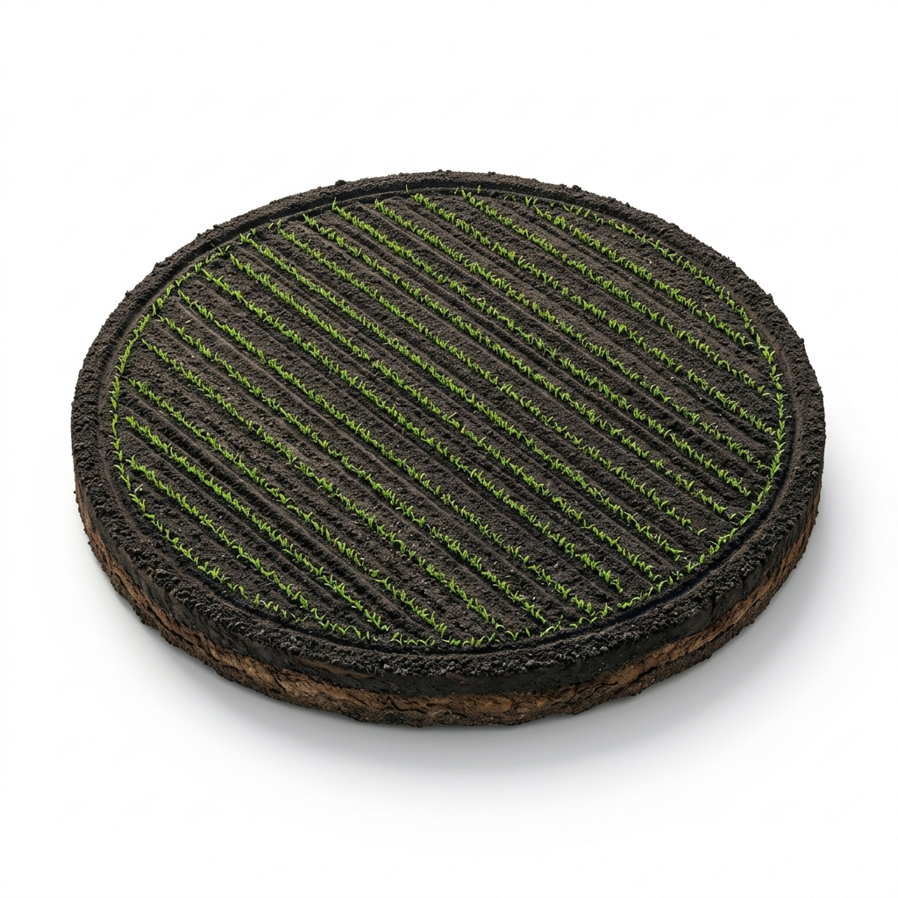

Loading Farm Assets
AgriSense AI is a cloud-enabled decision support platform designed for small-scale farmers and coordinators. Manage your plots, track inputs, analyze crop health, and receive smart recommendations.
Mark and verify farm boundaries on our interactive coordinate mapping tool to build your digital farm profile.
Upload leaf photos to instantly detect pests, nutrient deficiencies, and plant diseases using advanced computer vision.
Snap photos of fertilizer or pesticide packets. Our OCR reads labels instantly and creates structured log records.
A set of professional-grade tools built into a beautiful, fluid interface.
Get real-time location-specific rain forecasts, temperature, humidity, and heatwave alerts to coordinate irrigation schedules.
Spoken recommendations and translation support in English and multiple regional languages for low-literacy users.
Track seed, fertilizer, pesticide, and labor expenses per crop, and see visual summaries for smart budgeting.
Experience how AgriSense AI transforms reactive farming into proactive, data-driven agricultural intelligence.

The farmer sees only the physical land. Fragmented information, hidden crop stresses, and uncertain weather conditions create a reactive environment.
Hear from farmers and coordinators who use AgriSense AI to optimize harvests.
"AgriSense AI helps me diagnose crop disease in seconds. The voice feedback in our regional language is extremely useful."
"As a village coordinator, I can register dozens of plots and keep track of everyone's input logs. It has simplified record-keeping completely."
"The weather alert feature saved my harvest last month. I got a timely alert about heavy rainfall and postponed spraying."
Experience intelligent farm management and decision support with AgriSense AI.
Get Started Now